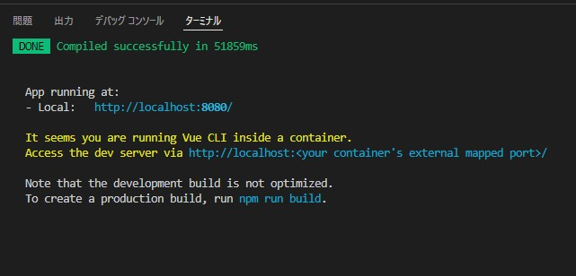

環境構築 その 2 Vue アプリケーションを Docker 環境で準備
続いて Vue アプリケーションの準備に移ります。
ecsite ディレクトリ直下を vscode で開いていることを確認してください。
vscode が正常に動作しないことがあります。
以下が ecsite ディレクトリになります。
mirameetVol31.-main/client/ecsite
1. Docker コンテナに入って npm install を実行
1-1.
Vue プロジェクトに必要なパッケージをインストールするためにまずは下記のコマンドで Docker コンテナに入ります。
docker-compose exec client sh
1-2.
ターミナル上に /usr/src と表示されていればコンテナに入れています。
Docker コンテナ内に入ったら npm で vue/cli をインストールします。 （少し時間がかかります）
npm install -g @vue/cli
1-3.
vue/cli のインストール終了後に、続いて、以下コマンドで node_modules フォルダ上に必要なパッケージ類がインストールされます。
(通信環境によってしばらく時間がかかります。)
npm install --save --legacy-peer-deps
2. Vue アプリケーションサーバーをたてる
2-1.
npm でパッケージインストールが完了したら引き続き Docker 内で
以下コマンドで Vue アプリケーションを立てましょう。ビルドには少々時間がかかります。
npm run serve
以下の表示になったら起動完了です。 
3. ブラウザから起動確認をしましょう。
3-1.
以下の URL でブラウザ上から起動の確認を行ってください。
url: http://localhost:8080